An end-to-end post-call automation that fires the moment a call ends: it reconciles Gong and Grain, classifies and protects exec calls, extracts insight with Claude, updates Salesforce without ever writing blind, and stores every run for retrospective analysis.
“When a call ends, send the transcript to AI and add it to Salesforce” is the answer a chatbot gives. The judgment lives in the edges. The whole design is built around these five.
Gong recordings, Grain-only transcripts, sometimes both — needs a normalize + race-safe dedup layer.
Internal exec calls must land in an admin-only area. Classification fails closed — when unsure, restrict.
From a list of attendee emails to the right account / contact / opportunity — with a human gate for ambiguity.
A confidence gate that doesn’t trust the model’s self-rating, plus an eval loop that measures drift.
Every run stored structurally so the business can ask “every Q2 pricing-objection call” in SQL.
Two webhook front doors (Gong + Grain) converge into one normalized pipeline. Built in n8n — the only in-scope tool with webhooks, branching, a wait-for-human node, raw HTTP for Gong/Grain, native Salesforce/Slack/BigQuery nodes, and a global error workflow, all self-hostable for exec-call privacy.

For every step: the node, the exact event it reacts to, what moves in and out, and what happens when it goes wrong.
| # | Node (type · op) | Trigger / event | Data in | Data out | Failure path |
|---|---|---|---|---|---|
| 1 | Webhook · Gong | call processing complete | callId, parties[] | raw event | missed → Schedule poll |
| 2 | Webhook · Grain | recording added | recording_id, participants[] | raw event | missed → Schedule poll |
| 3 | Code · Normalize | — | raw event | CallObject | malformed → error wf |
| 4 | Code · Fingerprint | — | CallObject | + fingerprint | — |
| 5 | BigQuery · MERGE claim | — | fingerprint | rows_affected | dup → stop (atomic) |
| 6 | Switch · Classify | — | participants[] | branch ext/int | low-conf → review |
| 7 | IF · Exec check | — | emails vs EXEC_LIST | branch | uncertain → restrict (fail-closed) |
| 8 | HTTP · Transcript | — | source_id | transcript text | not ready → Wait+retry → partial |
| 9 | HTTP · Claude (map/reduce) | — | transcript | insight JSON | invalid → repair → manual |
| 10 | IF · Validate | — | insight JSON | pass/fail | fail → Slack manual |
| 11 | SF · Search Contact | — | external emails | contact/account | 0/>1 → domain / HITL |
| 12 | Switch · Match + Wait | — | results | 1/0/many | many → Wait+pick; timeout → escalate |
| 13 | SF · Create Call_Summary__c | — | insight + IDs | record id | error → error wf |
| 14 | Slack/Docs · Route | — | insight + links | messages | — |
| 15 | BigQuery · Insert | — | fact + children | row ids | always writes workflow_run |
Where the design refuses to be naive — each is wired, not hand-waved.
Dedup is a write, not a read: a BigQuery MERGE claims the fingerprint atomically. rows_affected=1 → I own the call; 0 → another run already has it, stop. The simultaneous-webhook race becomes a deterministic winner.
The wait-for-rep node has a 24h limit. On timeout it escalates to the manager and persists the insight as Needs Review with match_status=unresolved. The data survives even if the human doesn’t answer.
Long calls route through Split → Claude (map) → Merge → Claude (reduce); short calls take the single-shot path. Cost, latency and context limits stay bounded.
Don’t gate on the model grading its own homework. Gate on structural truth — required fields filled, competitor names in an allow-list, match-hint emails in the attendee list — plus a 30-call golden set as regression on every prompt change.
Grain transcribes before classification, so a brief shared-space window exists. The flow scrubs at detection; the real zero-exposure fix is an upstream Grain workspace-default policy. Flagged as a dependency, not hidden.
External attendees on free-email domains (gmail/outlook) skip the domain→account match and go straight to contact-email match / human confirm — so they’re never mis-bucketed as internal or mismatched.
Not assumed — discovered. For each group: who to talk to, what to ask, the output we co-define, and how we validate it. Outputs start as a Slack message; only what proves used graduates to a Salesforce field or dashboard.
2 AEs (one top performer, one new) + Sales Manager.
“What do you retype into SF by hand? What do you forget? What do you need before the next call?”
Auto-drafted summary + next steps + pre-filled NextStep + risk flag. Kill CRM admin.
Run on 10 of their own past calls — would they have sent it as-is? Track accept-vs-edit rate.
1–2 SEs + SE lead.
“Which technical / integration / security asks get lost between the AE call and your follow-up?”
A #se-handoffs card: technical requirements, integrations named, security asks + transcript link.
SEs confirm extracted asks on samples; track handoffs accepted without pinging the AE.
1–2 PMs + a product analyst.
“How do you hear customer pain today? What taxonomy do you already use?” — adopt theirs.
Structured feature-request + competitor-intel feed, tagged to their themes, into #product-signals + BigQuery.
PMs label a sample — does AI tagging agree (inter-rater)? Trends match their gut on known topics.
VP / Head of Sales.
“What do you want to know across all deals weekly? Which deals need your attention?”
Weekly digest — objection mix, competitor trend, at-risk deals, sentiment by stage. Aggregate, not per-call.
Does “at-risk” match deals they already worried about? Calibrate thresholds before automating.
The founder(s) directly.
“Which accounts/themes do you personally want eyes on? Strategic signal vs noise? One line or a brief?”
Short exec brief for strategic / at-risk accounts + emerging market & competitor narrative. Exec calls stay admin-only.
Founder reads 3 briefs, says what to cut/add. Success = they forward it or act on it, not just receive it.
BigQuery as the analytics store; Salesforce stays the operational source of truth. The retro questions are flexible, time-series, trending queries across all calls — a columnar-warehouse job, in-scope (Google Workspace), and it feeds Looker / Sheets / Gemini for the team dashboards.
SELECT c.call_id, a.name, o.quote FROM fact_call c JOIN call_objections o USING(call_id) JOIN dim_account a ON a.id=c.account_id WHERE o.category='pricing' AND c.call_date BETWEEN '2026-04-01' AND '2026-06-30';
SELECT DATE_TRUNC(call_date,MONTH) m, COUNT(*) mentions FROM call_competitors WHERE competitor_name='Competitor X' GROUP BY m ORDER BY m;
The written spec goes node-by-node; the n8n file is a real, importable 25-node workflow — not pseudocode.
{kind=link}